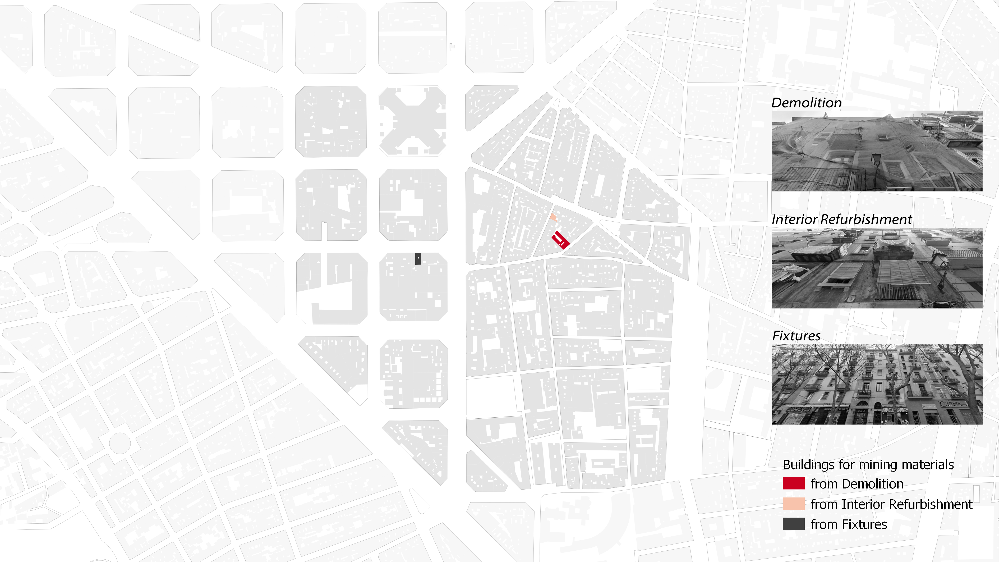
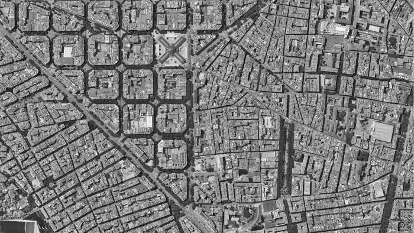
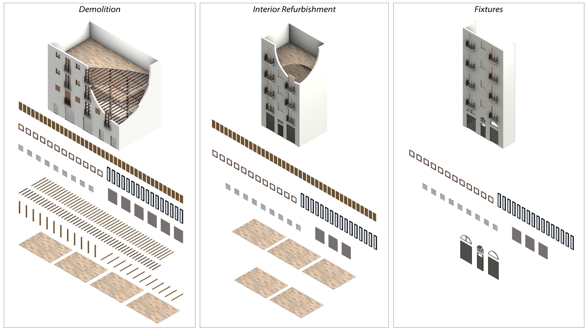

Liquicity
Liquicity appears as a way of interpreting the reflection of a liquid society in the city, in other words, the liquid city.
Introduction
As the population has been increasing, its concentration in cities has increased as well. This means that there is an increasing need for new housing and infrastructure mainly in cities that most of the time are already very densely populated. Accepting the inevitability of growing cities, we need to find sustainable strategies. Densifying urban centers might be one. By letting cities grow vertically instead of horizontally, we avoid urban sprawl, thus, the consumption of fertile natural soil and we can optimize resources.
Concept
Liquicity as a concept means having a city that can physically support an ever-changing society that reflects the urge for dynamism, productiveness, nomadism, and uncertainty in the densification of the city. This concept was supported by studying other theories and movements, like the metabolic movement of the “Walking City” or the “New Baylon” of Constant. Liquicity is also based on the idea of liquid modernity explored by Zygmunt Baumman which embraces the certainty of uncertainty.
.png)
.png)
Methodology
In order to implement the concept in Barcelona, the methodology used was focused on mapping dynamicity and density in the city, identifying a dynamic part of the city as the intervention area, and developing an urban proposal that could be as flexible and dynamic as the city and its population using elements from urban mining.
.png)
Mapping Liquicity
To map liquicity it was considered dynamicity and density as relevant indicators.
.png)
Dynamicity is mapped by taking into account aggregated footfall, land use diversity, and economic diversity. Density is mapped by analyzing population density, built density, and population variation.

Then, the maps were overlapped creating a bivariate map where it is possible to identify clusters of higher liquicity.
Adding the building age data, which is an indicator of a stable urban fabric, to the previous bivariate map creates a multivariate map where the implementation site can be identified.
Implementing Liquicity
To implement this concept with mined materials, it was necessary to map the buildings in the area considering heritage-protected buildings, building type, building age, and energy certificates. Then, buildings were categorized into three categories within a time frame of 5, 10, 15, or 20 years, according to the possibility of demolition, refurbishment, and renovation of fixtures.
.png)
A catalog of mined materials was created after the identification of three possible sites where materials could potentially be extracted. We clustered them into three categories depending on the way buildings can be changed in the future. So materials can be mined from a demolition site, an interior refurbishment, and from a site where fixtures from the facade will be renovated.
  Mined materials are upcycled and reused in order to formulate new living modules. The design concept of them consists of two principles. The open sides where are fully permeable and the closed sides can be either opaque or transparent. Dividing the modules into three categories by the assembly strategy of their sides we have private, semi-private, and public modules. Where private modules consist of 4 closed sides, semi-private by 3 or 2 closed sides, and public with 1 or none closed sides.
Once we have the module configurations in place we categories them into private modules, semi-private modules, and public modules. we arrange them hierarchically placing the private modules first on the rooftop surface and progressing towards the public modules as they go higher.

We define a methodology to select sites to place these modules. within the site premises, we identify places of high activity demand or high liquidity which are Sant Marti pedestrian market, Sant Marti market, plaza del Pedro, and plaza de Joseph. These places act as attractor points from or around which the modules can begin to proliferate. once these regions are selected we further set criteria and rules to select the rooftops as implementation sites. we start by placing them first on the rooftops of the smallest building heights while considering the rooftops have the lowest differences in height with their adjacent building, this is to ensure that the modules can grow or proliferate to other adjacent rooftops for optimal densification. Finally, we consider the smallest areas of rooftops in order to occupy a more diverse set of sites. These indexes provide an optimal solution to densify the neighborhoods.
This process allows us to understand densification according to the mined material quantity identified. The intervention expands and progresses through different time frames as the material availability increases. Densifying through liquicity helps determine a strategy that shows how through time mined materials can be implemented in the city.

Sources: OpenBCN / Ajuntament de Barcelona / UN /
Liquicity is a project of IAAC, Institute for Advanced Architecture of Catalonia developed in the Master in City & Technology 2021/22 by Students: Dimitrios Lampriadis, Julia Maria Ferreira Veiga, Maria Augusta Kroetz, and Yohan Wadia, Faculty: Areti Markopoulou, Oana Taut, Hesham Shawqy, and Assistant: Sarine Bekarian